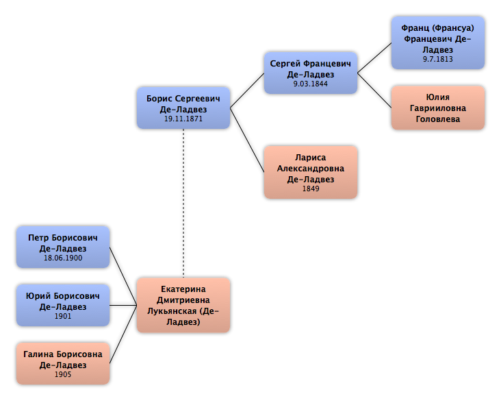

Домой
Домой
 Люди
Люди
 Семьи
Семьи
 Источники
Источники
 Диаграммы
Диаграммы
 Статистика
Статистика
Борис Сергеевич Де-Ладвез

Контекст

Родители
| Отец | Дата рождения | Мать | Дата рождения |
|---|---|---|---|
|
Сергей Францевич Де-Ладвез
|
9.03.1844 |
 Лариса Александровна Де-Ладвез Лариса Александровна Де-Ладвез
|
1849 |
Родители и дети
| Партнёры | Дата рождения | Дети |
|---|---|---|
|
Екатерина Дмитриевна Лукьянская
|
Петр Борисович Де-Ладвез
Юрий Борисович Де-Ладвез
Галина Борисовна Де-Ладвез
|
События
| Тип события | Дата | Место | Описание |
|---|---|---|---|
| Рождение | 19.11.1871 | Москва, Россия | |
| Окончание учебного заведения | 1893 | Окончил Константиновский Межевой институт | |
| Профессия | 1893 | Москва, Россия | Поступил в Межевую канцелярию |
| Другое событие | 1898 | Командируют из Москвы в Оренбургскую Башкирскую Землеустроительную Комиссию | |
| Профессия | 1901 | Перевелся на службу по землеустройству Алтайского Округа | |
| Военная служба | 19.07.1914 | Мобилизован на Кавказский фронт на мирной должности (казначей 622 пешей Томской дружины). | |
| Военная служба | 27.02.1917 | Ханкала, Россия | Правитель канцелярии Управления Корпусного инженера 4 Кавказского армейского корпуса в Закавказья |
| Военная служба | 1918 | Казань, Россия | Поступил на службу в Топографический отдел при штабе бывшего Казанского военного округа |
| Военная служба | 10.04.1919 | Омск, Россия | Подлежит увольнению от службы и исключению из резерва. |
| Военная служба | 25.09.1919 | Омск, Россия | Мобилизован в армию Колчака |
| Другое событие | 10.01.1920 | Томск, Россия | Арест |
| Другое событие | 4.02.1920 | Красноярск, Россия | Отправили Бориса Сергеевича в концлагерь |
| Другое событие | 25.05.1993 | Москва, Россия | Реабилитирован |
| Смерть | 25.04.1921 | Челябинск, Россия | Расстрелян |
Факты
Медиа
Примечание
Источники
Родство
| Имя | Степень родства | Дата рождения | Место рождения | Дата смерти | Место смерти |
|---|---|---|---|---|---|
| Партнёров | |||||
| Жена | |||||
| Братья и сёстры | |||||
| Брат | 30.01.1870 | ||||
| Дети | |||||
| Сын | 18.06.1900 | ||||
| Сын | 1901 | ||||
| Дочь | 1905 | ||||
| Родителей | |||||
| Отец | 9.03.1844 | 23.09.1887 | |||
| Мать | 1849 | 14.04.1906 | |||
| Дедушки и бабушки | |||||
| Бабушка | |||||
| Дедушка | 9.7.1813 | ||||
| Прадедушка и прабабушка | |||||
| Прадедушка | 24.12.1756 | Франция | 2.09.1846 | Москва, Россия | |
| Прабабушка | 6.04.1784 | 3.02.1845 | Москва, Россия | ||
| Пра-прадедушка и пра-прабабушка | |||||
| Пра-прадедушка | |||||
| Племянники и племянницы | |||||
| Племянник | 31.12.1895 | г. Сороки Бессарабской губернии, Россия | 27.10.1937 | Оренб. обл, СССР | |
| Племянник | 16.07.1900 | ||||
| Тёти и дяди | |||||
| Тётя | 24.07.1845 | ||||
| Тётя | 2.09.1846 | ||||
| Тётя | 27.09.1849 | ||||
| Дядя | 28.09.1849 | Москва, Россия | |||
| Двоюродные дедушки и двоюродные бабушки | |||||
| Двоюродный дедушка | 14.10.1807 | Москва, Россия | 26.06.1857 | Москва, Россия | |
| Двоюродный дедушка | 1812 | Москва, Россия | 1850 | Рязань, Россия | |
| Двоюродный дедушка | 18.09.1817 | Москва, Россия | 29.10.1854 | Санкт-Петербург, Россия | |
| Дальние родственники | |||||
| Троюродная сестра | |||||
| Троюродная сестра | |||||
| Троюродный брат | 23.09.1880 | ||||
| Троюродный брат | 23.2.1888 | Москва, Россия | 05.08.1929 | Москва, СССР | |
| Другие родственники | |||||
| Троюродный внучатый племянник | |||||
| Троюродная внучатая племянница | |||||
| Троюродный правнучатый племянник | |||||
| Троюродный внучатый племянник | |||||
| Троюродный правнучатый племянник | |||||
| Троюродная внучатая племянница | |||||
| Троюродная внучатая племянница | |||||
| Двоюродный дядя | 2.01.1847 | Москва, Россия | |||
| Троюродная племянница | 23.10.1899 | Москва, Россия | |||
| Троюродный племянник | 21.07.1900 | Москва, Россия | 1947 | ||
| Троюродная племянница | 22.09.1902 | Тифлис (Тбилиси), Грузия | |||
| Троюродная племянница | 03.12.1905 | Москва, Россия | |||
| Троюродная племянница | 10.04.1907 | Двинск, Россия | |||
| Троюродная племянница | 16.02.1910 | Санкт-Петербург, Россия | |||
| Троюродная племянница | 23.03.1911 | Москва, Россия | |||
| Троюродный племянник | 10.05.1912 | Москва, Россия | |||
| Троюродный внучатый племянник | 22.08.1926 | Хабаровск, СССР | 08.05.2006 | Санкт-Петербург, Россия | |
| Троюродная правнучатая племянница | 19.03.1963 | Ленинград, СССР | |||
| Троюродный правнучатый племянник | 22.02.1965 | Ленинград, СССР | |||